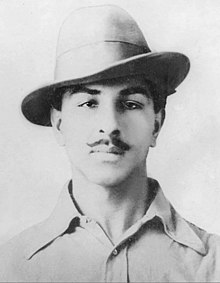
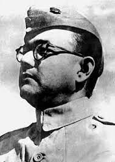
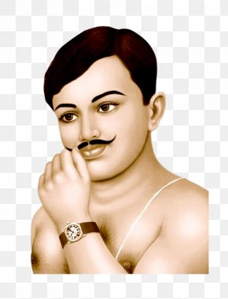
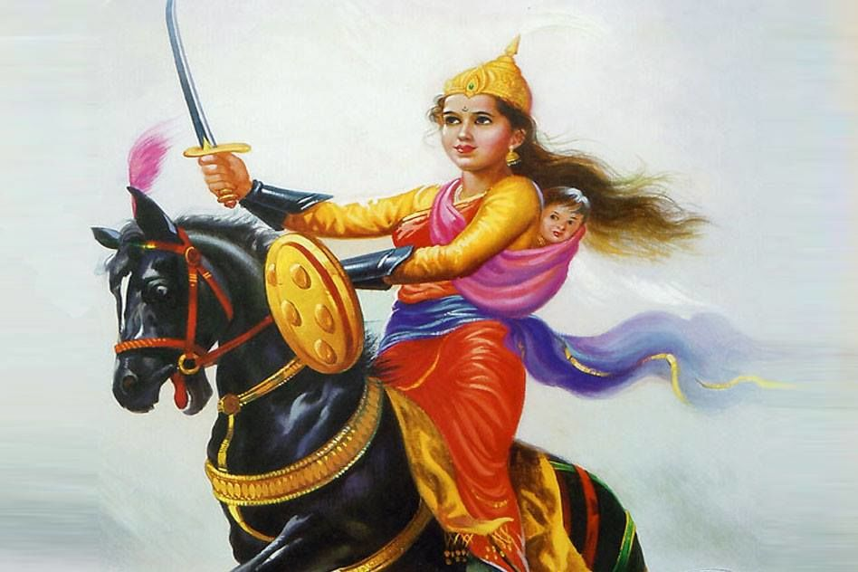
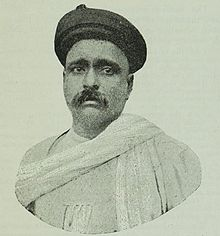
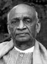
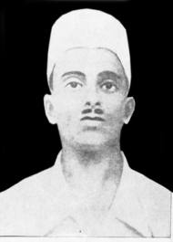

The Independence Day of India, which is celebrated religiously throughout the Country on the 15th of August every year, holds tremendous ground in the list of national days, since it reminds every Indian about the dawn of a new beginning, the beginning of an era of deliverance from the clutches of British colonialism of more than 200 years. It was on 15th August 1947 that India was declared independent from British colonialism, and the reins of control were handed over to the leaders of the Country. India's gaining of independence was a tryst with destiny, as the struggle for freedom was a long and tiresome one, witnessing the sacrifices of many freedom fighters, who laid down their lives on the line.This year India is going to celebrate its 75th Independence Day.
Freedom Fighters
Some of the freedom fighters include :

Bhagat Singh

Subhash Chandra Bose

ChandraShekhar Azad

Rani Lakshmibai

Bal Gangadhar Tilak

Sardar Patel

Lala Lajpat Ray
Lala Lajpat Ray
Lala Lajpat Rai was an Indian independence activist. He played a pivotal role in the Indian Independence movement. He was popularly known as Punjab Kesari. He was one of the three Lal Bal Pal triumvirates. More about him

Sukhdev
.jpg)